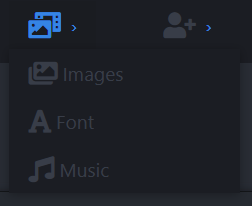
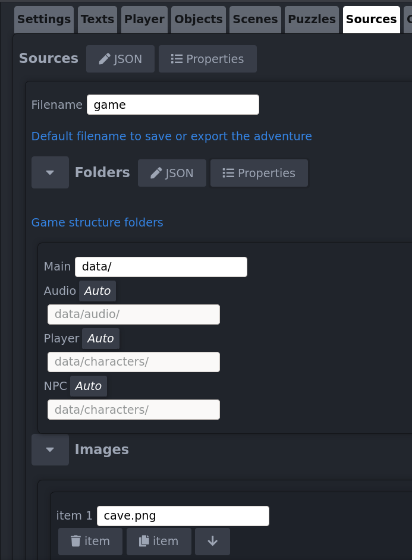
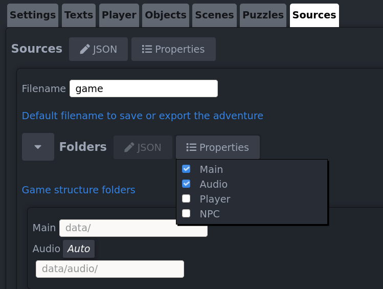
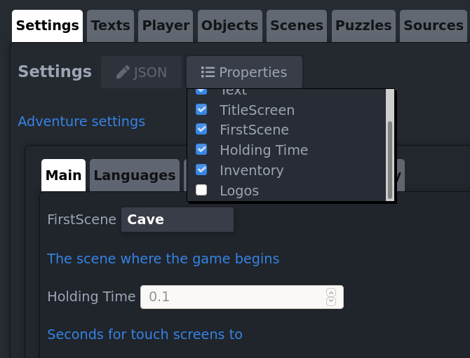
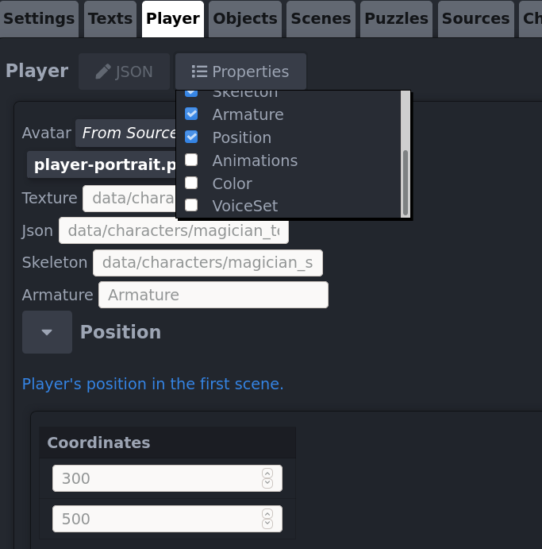

Understanding the editor
LaunchThe menu

- Load Adventure. Load a project adventure. Don't load a JSON you exported, only the ones you saved.
- Save Adventure. Save a project adventure to local disk. You can use this JSON also for game testing.
- Export Adventure. It removes the sources parameters and minify the JSON. You must include it for your game distribution.
- Delete Adventure. Clear everything. Also deletes any autosaved progress so make a local copy before use it.
- Import Scene. Import scene data exported with GIMP plug-in. Imports the scene itself and objects in it.
- Import Sources. Import the images, bitmapfonts and audio names. It's the first step to create an adventure.
- Import player and non-playable characters. Import the characters data. You must select the
your-character_ske.jsonfile. - Tools. Useful external tools to create the adventure.
- Help. This tutorial.
- Error indicator. Check if the JSON is valid.
JSON and Properties
JSGAM Engine uses JSON configuration files to make the adventure, if you don't know what JSON is you should read this.
In the JSGAM Editor you can edit manually the JSON if needed, useful when you need to add or modify a walk area or an obstacle.
The properties button allows you to add or remove properties, for example to make an object available to be taken you have to add the property Take.
Sources
The first step to work with the editor is to import the sources (really you import the names of the sources).
- Images: import the JSON file generated with Texture Packer
- Fonts: JSGAM uses bitmapfonts in AngelCode format (XML), import the FNT file.
- Audio: select any audio file (MP3, MPEG, OPUS, OGG, OGA, WAV, AAC, CAF, M4A, MP4, WEBA, WEBM, DOLBY, FLAC).
You can see all sources you imported in the Sources tab.
- Filename: It's the name by default when you save your adventure to local hard disk
- Folders: It's a very important to make sure everything works correctly 
- Images: the images names we'll use in our adventure
- Fonts: the fonts names we'll use in our adventure
- Audio: the audio names we'll use in our adventure
Settings
Here is the game configuration:
- Set the first scene of the game (you have to create or import at least one scene to set this parameter)
- Time for the use action in touch devices
- Language list
- Text styles for the game
- Configure the title screen
- Configure the inventory
- Add logos to show before the title screen if you want 
Texts
Set the user interface texts for the adventure. Use the character> to set a line break.
Player
IMPORTANT: Each character must have a different Armature name.
Import your-player_ske.json file to easier configuration.
The default animations names are:
- Stand action:"stand"
- Walk action:"walk"
- Take action:"take"
- Use action:"use"
- Say action:"speak"
If you use another names for your animations, you can specify them checking the Animations property


{kind=link}
{kind=link}